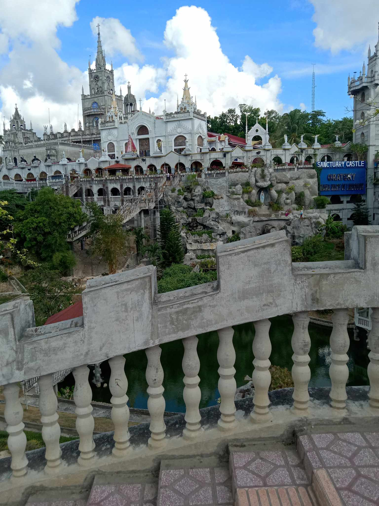

My favorite place is Simala Shrine. It is located in Sibonga, Cebu. This place is very beautiful and peaceful. Many people visit to pray and ask for blessings. The castle-like design makes it look amazing. I feel calm and happy when I visit Simala Shrine. It is a special place for me.
SIMALA SHRINE